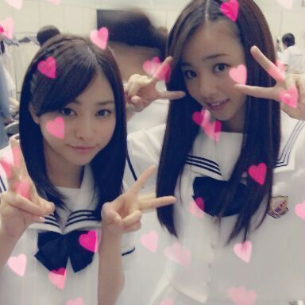

| 2013/07 07 Sun | 今は隣で らりんと まぃまぃが孤独なLoverを踊って まぁ〜す＼(^o^)／ ろって ぃ- |
はぁ〜い (*^^*)
皆さん 今日は握手会に来て頂き,
本当にありがとうございました ♪

ねねころちゃん とです ^ ^ /
今までの全国握手会での
ペアの相手は元々決まっていたのですが
今回は 初めて
ミニライブの途中に
くじ引きでペアを決めるとゆうのに
チャレンジしてみました(^▽^)！
ねねとまひろは 『team高3』
あと、涙袋同盟とゆうところでしょぅか...
ねねの あの涙袋にはかなわない
ちゅーねん^^
なんだか最近よく一緒に
いる感じがして
この前も 2人で渋谷に行ったり
相談事をしあっている中だったので
とっても嬉しかったですヽ(´▽｀)/
Rotty夢☆ ねねころ部 の皆さん
そして 今日 ミニライブ&握手会に
きてくださった皆様、、、
今日は本当にありがとうございました！
とっても楽しかったし
久しぶりに皆さんの笑顔を見れて
幸せなキモチになりました(*^^*)
『扇風機』そして『コウモリよ』は
どうでしたか？
コウモリよは後ろの方のかたにまで
届く様に踊ったんだけど
皆さんに伝わったかなあ？？
扇風機は まひろには
可愛い過ぎる曲かなぁ？
大丈夫かなぁ(>ω<)？
お昼ご飯中の生駒ちゃん と かなを
いきなり パシャりっ(゜▽゜*)

生駒ちゃんの顔
めっちゃ可愛い〜(о´∀`о)
かなも扇子で半分
隠しちゃってるやぁん♪
ではっ 今日は本当にありがとう、
皆 大好きです(*^^*)
もう まひろはメイク落として
すっぴんよぉ〜 キラキラ〜))
今日はもう足パンパーン。
帰りはぐっすり寝ようかな？
皆も今日は疲れただろうし
なるべく早くベッドに入り
ゆっくり休んでくださいね ^ ^/
おやちゅみなさい... (love)わら
めっちゃ可愛い〜(о´∀`о)
かなも扇子で半分
隠しちゃってるやぁん♪
ではっ 今日は本当にありがとう、
皆 大好きです(*^^*)
もう まひろはメイク落として
すっぴんよぉ〜 キラキラ〜))
今日はもう足パンパーン。
帰りはぐっすり寝ようかな？
皆も今日は疲れただろうし
なるべく早くベッドに入り
ゆっくり休んでくださいね ^ ^/
おやちゅみなさい... (love)わら
コメント(177)
2013/07/07 19:06